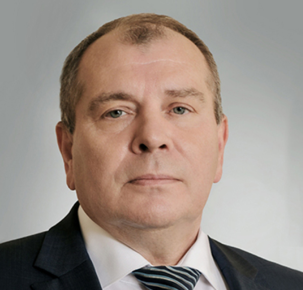

Руководство
О Компании


Руководство
-
Яковенко
Игорь АлександровичПредседатель Совета директоровТочками роста для нашего бизнеса по-прежнему остаются клиентоориентированность, предоставление высококачественных услуг перевалки грузов и динамичное развитие инфраструктуры.Яковенко Игорь Александрович
Председатель Совета директоровЯковенко И. А. работает в Группе компаний «Дело» с 2005 года и прошел путь от ведущего специалиста до генерального директора ООО «Новороснефтесервис» и ООО «Новороссийский нефтеперевалочный комплекс», которые до 2013 г. входили в состав нефтяного бизнес-направления Группы компаний «Дело». В период с 2013 по 2015 год руководил терминальной сетью ООО «Газпромнефть Марин Бункер» в г. Новороссийске.
Ранее в 2002–2005 годах Игорь Яковенко работал в ЗАО «Лукойл-Черноморье» на различных должностях, где отвечал за развитие бизнеса Компании.
Окончил Голицынский пограничный институт Федеральной службы безопасности РФ и Финансовую Академию при Правительстве РФ.
-
Матвиенко Юрий ВикторовичЧлен Совета директоров
Матвиенко Юрий Викторович
Член Совета директоровНазначен на должность Генерального директора ООО «НУТЭП» в ноябре 2015 года.
Г-н Матвиенко имеет большой опыт работы в транспортной отрасли, прошел путь от 4-го помощника капитана дальнего плавания до руководящих должностей на предприятиях водного транспорта и в стивидорных компаниях (ОАО «Туапсинский морской торговый порт». ОАО «Новороссийский морской торговый порт», ООО «БалттрансСервис», ООО «Приморский торговый порт», ЗАО «Морской портовый сервис»).
О Окончил Новороссийское высшее инженерное морское училище по специальности «Судовождение на морских путях», имеет степень MBA бизнес-школы IMISP (Санкт-Петербург).
-
Труханович Александр НиколаевичГенеральный директор
Труханович Александр Николаевич
Член Совета директоровПрисоединился к команде Группы компаний «Дело» в 2006 году.
Г-н Труханович работает в транспортной отрасли с 2006 года и имеет большой опыт управления стивидорными активами. С 2006 по 2015 годы Александр Труханович занимал руководящие должности в ООО «Новороснефтесервис» и ООО «Новороссийский нефтеперевалочный комплекс» (до 2013 года входили в состав нефтяного бизнес-направления группы «Дело»).
Александр Труханович закончил Московский военный институт Федеральной пограничной службы РФ по специальности «юриспруденция» и Морскую государственную академию имени адмирала Ф. Ф. Ушакова по специальности «организация перевозок и управление на транспорте (морском)».
-
Салабуда Надежда ГригорьевнаЧлен Совета директоров
Салабуда Надежда Григорьевна
Член Совета директоровС июля 2016 года Надежда Салабуда назначена до должность директора филиала ООО «Каргилл» в Краснодаре и возглавляет коммерческое направление масличных и зерновых культур в компании.
Надежда присоединилась к команде международной компании Cargill в 2004 году и занимала различные должности в коммерческом департаменте зерновых и масленичных культур в европейском подразделении компании (Grain & Oilseeds Supply Chain Europe Business Unit). На протяжении 7 лет участвовала в проектах стратегического развития компании в России.
Окончила факультет мировой экономики КубГУ и факультет международного менеджмента Hochschule fur Technik und Wirtschaft Berlin.
Надежда Салабуда также является членом совета директоров в совместном предприятии Cargill в Казахстане.
-
Суркова Елена АлександровнаЧлен Совета директоров
Суркова Елена Александровна
Член Совета директоровОкончила Российский государственный торгово-экономический университет (сейчас филиал Российского экономического университета имени Г. В. Плеханова).
Г-жа Суркова присоединилась к группе компаний «Дело» в 2013 году в качестве начальника отдела по корпоративной отчетности и отвечала за консолидацию и подготовку финансовой и управленческой отчетности компаний Группы, финансовый анализ и взаимодействие с аудиторами.
С 2015 года Елена Суркова является заместителем генерального директора ООО «ДелоПортс» по экономике и финансам и курирует вопросы взаимодействия «ДелоПортс» с финансовыми службами дочерних предприятий и отдельными службами головной компании Группы.
Ранее Елена была аудитором в компании PricewaterhouseCoopers, отвечая за проверки крупных промышленных предприятий.
Является членом АССА.
-
Труханович Александр НиколаевичГенеральный директор
Труханович Александр Николаевич
Член Совета директоровПрисоединился к команде Группы компаний «Дело» в 2006 году.
Г-н Труханович работает в транспортной отрасли с 2006 года и имеет большой опыт управления стивидорными активами. С 2006 по 2015 годы Александр Труханович занимал руководящие должности в ООО «Новороснефтесервис» и ООО «Новороссийский нефтеперевалочный комплекс» (до 2013 года входили в состав нефтяного бизнес-направления группы «Дело»).
Александр Труханович закончил Московский военный институт Федеральной пограничной службы РФ по специальности «юриспруденция» и Морскую государственную академию имени адмирала Ф. Ф. Ушакова по специальности «организация перевозок и управление на транспорте (морском)».
-
Горбенко Юрий КонстантиновичПервый заместитель генерального директора
Юрий Горбенко
Первый заместитель генерального директораПрисоединился к команде Группы компаний «Дело» в 2010 году.
17 лет опыта работы в отрасли.
Имеет богатый опыт в сфере морского транспорта.
Окончил Ростовское мореходное училище им. Г. Я. Седова по специальности «Дноуглубительные работы и судовождение технического флота» и Новороссийскую государственную морскую академию по специальности «Судовождение».